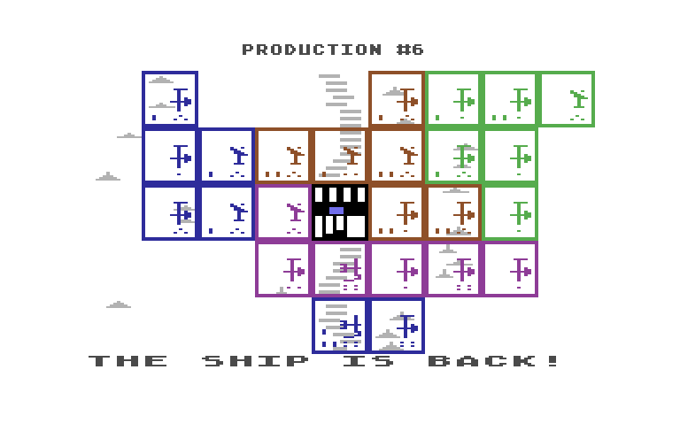
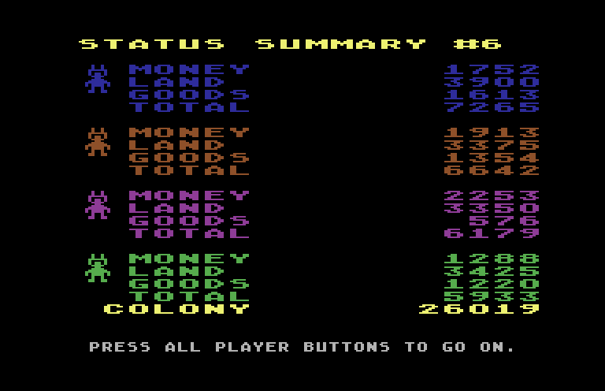

הרעיון בדקה
חללית מורידה ארבעה מתיישבים על כוכב הלכת Irata (השם הוא Atari בהיפוך אותיות, המחשב שעליו נכתב המשחק לראשונה) ומבטיחה לחזור בעוד כמה חודשים. עד אז צריך להקים מושבה. כל שחקן מקבל חלקות אדמה, ועל כל חלקה הוא מציב פרד: M.U.L.E., ראשי תיבות של Multiple Use Labor Element, כלומר "יחידת עבודה רב־שימושית". זה רובוט עקשן שמציידים אותו לסוג ייצור אחד, והוא מייצר שם סחורה בכל חודש.
את הסחורה סוחרים במכירה פומבית, מול השחקנים האחרים ומול החנות של המושבה. בסוף המשחק מנצח מי ששווה הכי הרבה: כסף, אדמה וסחורה. אבל יש תנאי: אם המושבה כולה לא שרדה, כולם הפסידו. לכן המשחק הוא תמיד גם תחרות וגם שיתוף פעולה.
מזון
Food
קובע כמה זמן יש לך בתור. בלי מזון התור שלך נגמר כמעט לפני שהתחיל. גדל הכי טוב בעמק הנהר.
אנרגיה
Energy
כל פרד שאינו מייצר אנרגיה צריך יחידת אנרגיה כדי לעבוד. בלי אנרגיה הוא מייצר אפס. הכי טוב במישור.
סמיתור
Smithore
עפרה (smith נפח + ore עפרה) שממנה החנות בונה פרדות חדשות. נכרה בהרים.
קריסטייט
Crystite
גביש יקר שנמכר מחוץ לכוכב. כסף טהור, ורק ברמת הטורניר. מסתתר מתחת לאדמה וצריך לחפש אותו.
המשחק בנוי מסיבובים (חודשים). ברמת המתחילים יש 6, ברמות האחרות 12. כל סיבוב נראה כך:
חלוקת קרקעותכל שחקן יכול לתפוס חלקה אחת בחינם.
פיתוחכל שחקן בתורו, נגד השעון: קונה פרד, מצייד אותו ומציב אותו על חלקה.
ייצורהפרדות עובדות. לפעמים קורה משהו: רעידת אדמה, גשם חומצי, פיראטים.
מכירות פומביותשלוש (או ארבע) ברצף, אחת לכל סחורה.
סיכוםמי מוביל ומה שווי המושבה.
סיבוב שלם, צעד אחר צעד
הצילומים כאן הם ממשחק אחד אמיתי שרץ על האמולטור שלנו: רמת מתחילים, שחקן אנושי אחד בכחול מול שלושה שחקני מחשב. אפשר לדפדף בכפתורים, בנקודות או בחצי המקלדת. העיגולים האדומים על התמונה מסבירים מה רואים.
מחשבון ייצור: מה כדאי לגדל איפה
כמה יחידות חלקה מייצרת בחודש? זה תלוי בשלושה דברים: סוג האדמה, מה שמגדלים עליה, ושני בונוסים שהמשחק לקח מתורת הכלכלה. שחקו עם הכפתורים.
חלקה אחת
1
4
המספר הוא הממוצע. ברמת המתחילים הוא קבוע; ברמות האחרות הייצור בפועל זז מעט בכל חודש, ואירועים אקראיים יכולים לשנות אותו.
יתרון לגודל
Economies of scale
שתי חלקות צמודות שמייצרות אותו דבר מקבלות כל אחת יחידה נוספת. לכן כדאי לבנות גושים ולא לפזר.
עקומת הלמידה
Learning curve
על כל שלוש חלקות מאותו סוג, בכל מקום במפה, כל אחת מהן מקבלת עוד יחידה. התמחות משתלמת.
כמה צריך כדי לשרוד
לפני כל מכירה פומבית המשחק מראה לך אם יש לך עודף או מחסור. החישוב פשוט, ואפשר לעשות אותו מראש:
2
1
7
3
מה שנשאר במחסן אחרי השימוש מתקלקל בחלקו: חצי מהמזון ורבע מהאנרגיה. סמיתור וקריסטייט מתקלקלים רק מעל 50 יחידות. לכן לאגור מזון זה בזבוז, ולאגור אנרגיה זה סביר.
מעבדת המכירה הפומבית
זה הלב של המשחק, וגם החלק שהכי קשה להבין מקריאה. המוכרים עומדים למעלה ויורדים כדי להוריד מחיר. הקונים עומדים למטה ועולים כדי להעלות הצעה. כשקו המכירה וקו הקנייה נפגשים, יחידות עוברות ידיים אחת אחת עד שמישהו זז. החנות היא הרצפה והתקרה: היא תמיד קונה במחיר הנמוך ומוכרת במחיר הגבוה (כל עוד יש לה מלאי).
כאן יש לך 5 יחידות מזון עודפות. החנות משלמת רק 15. קונה רעב אחד מטפס לאט, והוא מוכן לשלם הרבה יותר, אבל הוא לא יגיד לך כמה. נסו פעם לרוץ ישר לחנות, ופעם לחכות לו בסבלנות.
החנות מוכרת ב-50
החנות קונה ב-15
את/ה
קונה
נמכרו: 0 מתוך 5
הכנסה: $0
מחיר ממוצע: -
במקלדת: להחזיק W ו-S (או את הכפתורים). במשחק עצמו אלה מעלה ומטה בג'ויסטיק.
תיקו? העני זוכה
כששני שחקנים מגיעים לאותו מחיר באותו רגע, מי ששווה פחות סוחר ראשון. כך גם בחלוקת הקרקעות. המשחק תמיד עוזר למי שמפגר.
הקו הקריטי
ברמת המתחילים אי אפשר למכור מתחת לכמות שתצטרך בחודש הבא. ברמות האחרות מותר, ועל אחריותך.
כשהחנות ריקה
אין תקרה. מי שמחזיק את האנרגיה האחרונה במושבה יכול לדרוש כל מחיר, והקונה יכול רק לקוות שהמוכר ירד אליו.
ניקוד וסיום


שימו לב לשורה האחרונה, COLONY. ברמה הרגילה וברמת הטורניר המושבה צריכה להגיע יחד ל-60,000 לפחות. אם לא, כולם נשלחים הביתה, כולל המנצח. מי שחונק את היריבים שלו יותר מדי חונק גם את עצמו: שחקן מרושש לא יכול לקנות ממך כלום.
שלוש הרמות
| מתחילים Beginner | רגיל Standard | טורניר Tournament | |
|---|---|---|---|
| אורך | 6 חודשים | 12 חודשים | 12 חודשים |
| אדמה | רק חלוקה חינם | גם מכירה פומבית של חלקות אחרי כל חלוקה, ואפשר למכור חלקה משלך דרך משרד הקרקעות | כמו ברגיל |
| פרדות | מחיר קבוע של 100, ותמיד יש | יש 16 בהתחלה. כשנגמרות, החנות בונה אחת מכל 2 יחידות סמיתור שהיא קונה, והמחיר עולה ויורד | כמו ברגיל |
| הצבה | פספסת את הבית? נשמע צפצוף ומנסים שוב | פספסת? הפרד בורח | כמו ברגיל, ועם פחות זמן |
| מכירה | אי אפשר למכור מתחת לקו הקריטי. סמיתור במחיר קבוע של 50 | מותר למכור הכול. כשהחנות ריקה אין תקרת מחיר | כמו ברגיל, ועוד קנוניה |
| סחורות | מזון, אנרגיה, סמיתור | מזון, אנרגיה, סמיתור | גם קריסטייט, עם משרד הבדיקות לדגימות קרקע |
קנוניה (Collusion, מלטינית: "לשחק יחד") היא עסקה פרטית בתוך המכירה. שני שחקנים לוחצים על הכפתור בדיוק באותו רגע, המסך נצבע ורוד, ושאר השחקנים והחנות נשארים בחוץ עד שהשעון נגמר. כך מונעים מהמוביל לקנות את הסחורה שלך.
הדמויות
שמונה מינים, וההבדל ביניהם הוא בעיקר סכום הפתיחה. זו שיטת ההגבלה (הנדיקפ) של המשחק:
| מין | כסף בפתיחה | למי |
|---|---|---|
| Flapper | $1600 | למתחילים. גם מקבל יותר זמן בתור |
| Bonzoid, Gollumer, Leggite, Packer, Spheroid | $1000 | רגיל. ההבדל ביניהם הוא רק המראה |
| Humanoid | $600 | למנוסים. פחות כסף ופחות זמן |
| Mechtron | $1000 | המחשב תמיד משחק אותו. ברמת הטורניר הוא מקבל עוד 200 |
טיפים
- תמיד לקחת חלקה בחלוקה, גם אם היא לא זו שרצית. כל חלקה שווה 500 בניקוד.
- קודם כול לא להיות תלוי באחרים: חלקת נהר למזון, ולידה חלקת מישור לאנרגיה. זה מחזיק אותך בחודשים הראשונים.
- ללכת באלכסון. זו הדרך המהירה ביותר. הרים והנהר מאטים אותך.
- נשאר זמן? לפאב. כניסה לפאב מסיימת את התור ומשלמת לך לפי הזמן שנותר. אף פעם לא לתת לשעון להיגמר סתם.
- הוומפוס (Wampus, מפלצת ממשחק המחשב Hunt the Wumpus מ-1973) גר במערות בהרים. כשהוא פותח דלת נדלק אור קטן על הר. מי שמגיע אליו בלי פרד, ובלי ללחוץ על הכפתור, מקבל ממנו כסף.
- אין זמן להגיע לחלקה? להחזיר את הפרד למכלאה. מקבלים בחזרה את מחיר הפרד, ומפסידים רק את הציוד.
- אפשר להחליף. לחיצה על חלקה שכבר יש בה פרד מוציאה אותו, ואפשר לקחת אותו לחנות אחרת ולהסב אותו לייצור אחר.
- לנענע את הדמות במכירה. עולים ויורדים קצת כדי לפתות את הצד השני לבוא אליך, במקום ללכת אליו.
- כמה שווה חלקה במכירת קרקעות? הכלל של דן באנטן, מתכנן המשחק: מספר החודשים שנותרו כפול 100, ועוד 500. בהתחלה משלמים הרבה, בסוף כמעט כלום.
- לפני הסוף: בשלושת החודשים האחרונים שווה להסב חלקות לסחורה היקרה ביותר, אחרי שאגרת מספיק אנרגיה.
- הפיראטים גונבים את כל הסמיתור (וברמת הטורניר את כל הקריסטייט). מי שיושב על מלאי גדול מהמר.
- המפגר מקבל עזרה: הוא זוכה בתיקו, אירועים רעים לא פוגעים בו, והמוביל אף פעם לא מקבל מזל טוב.
מקשים בדף המשחק שלנו
| מה | שחקן יחיד | שני שחקנים |
|---|---|---|
| תנועה | מקשי החצים (או W A S D) | ראשון: W A S D · שני: חצים |
| כפתור הג'ויסטיק | Space (או F) | ראשון: F · שני: Space |
| במסך הפתיחה | F3 רמה · F5 מספר השחקנים האנושיים (4, 3, 2, 1, הדגמה) · F7 התחלה · F1 בחירת דמויות מחדש | |
| הפסקה | P (במחשב המקורי זה היה מקש הרווח) | |
| לזרז את המחשב | להחזיק את כפתור הג'ויסטיק בזמן ששחקני המחשב משחקים | |
במקור אפשר היה לשחק ארבעה: שניים בג'ויסטיקים ושניים על המקלדת. בדף שלנו יש כרגע מיפוי נוח לשניים, וג'ויפד USB עובד גם הוא.